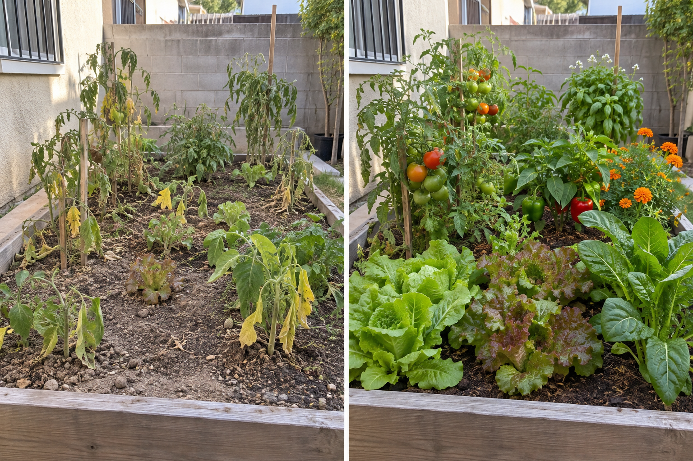

🌱 DESCUBRE EL SECRETO DE UN JARDÍN MÁS SALUDABLE
¡CONOCE EL MÉTODO NATURAL PARA TENER PLANTAS MÁS FUERTES, MÁS FLORES Y MEJORES COSECHAS!
Descubre qué podría estar faltando en tu jardín con unas preguntas sencillas.

HOYTU OBJETIVO✓ Gratis ✓ Solo 2 minutos ✓ Resultado personalizado